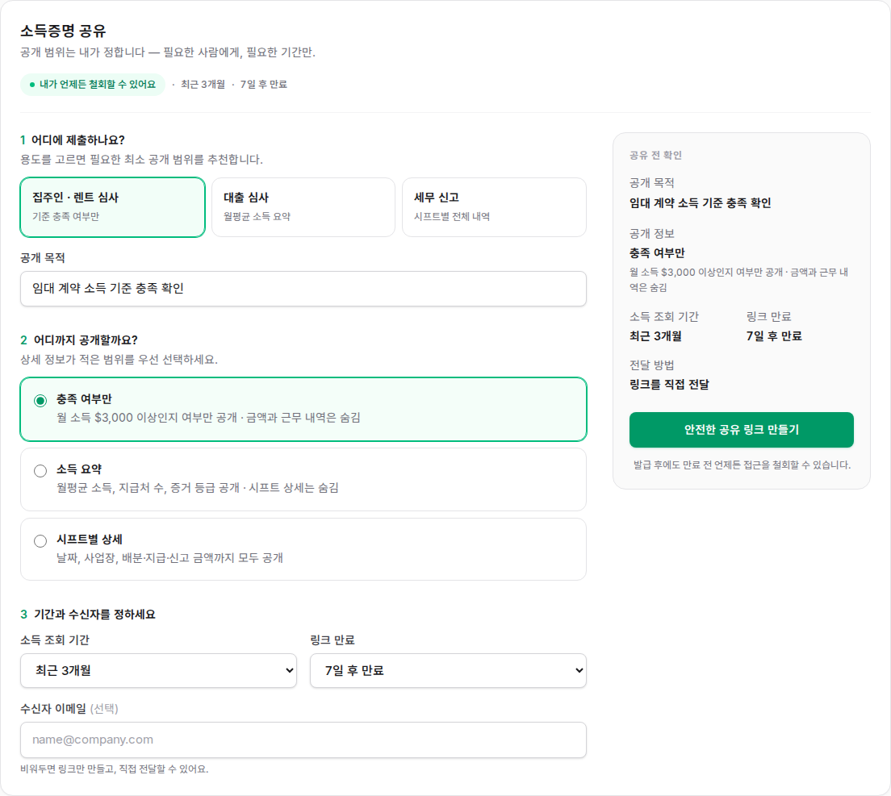
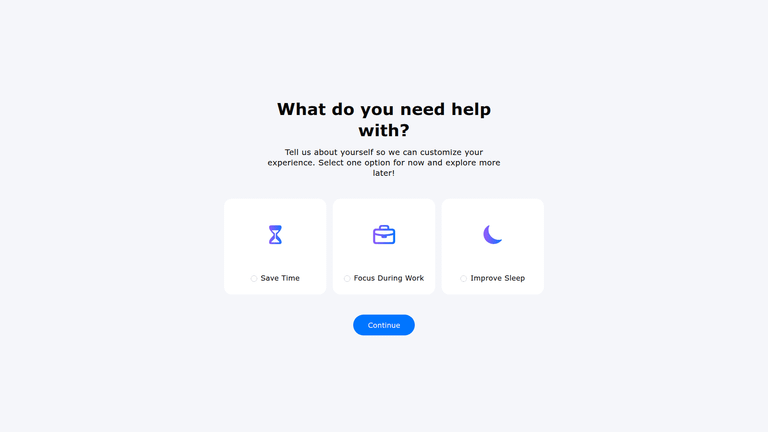
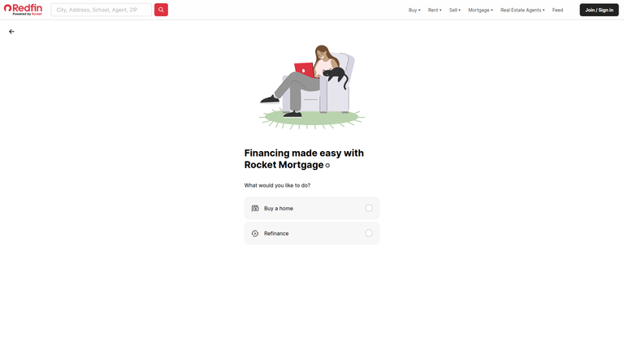
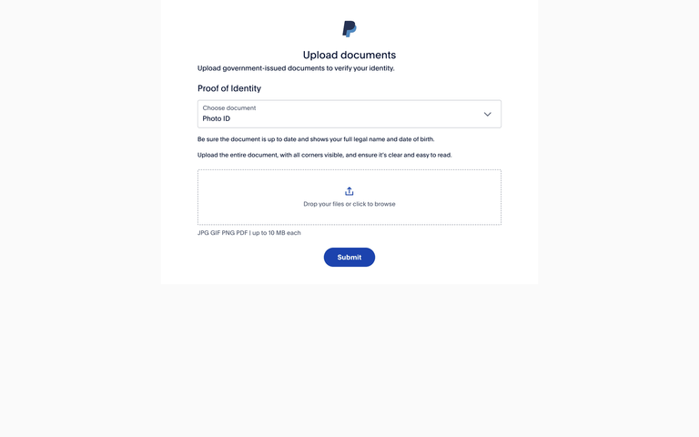
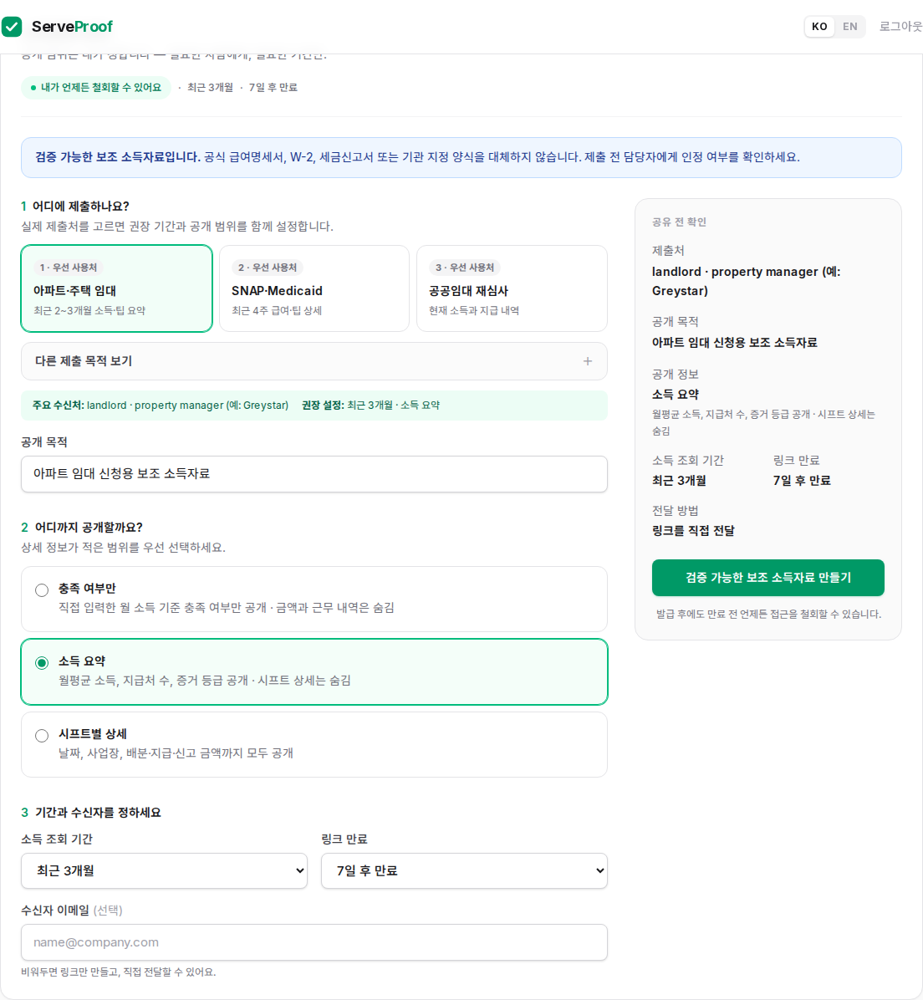
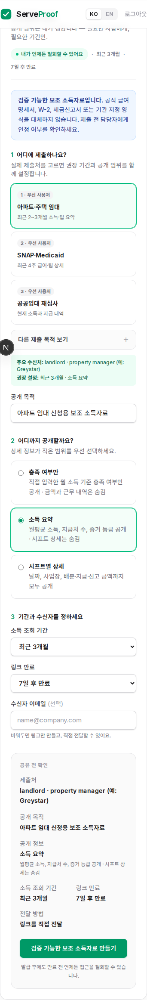

TL;DR기술적인 LEVEL 선택기를 실제 시민의 제출 목적 선택기로 바꾼다.
임대·SNAP/Medicaid·공공임대를 최상단에 두고, 선택한 기관 맥락에 따라 목적·기간·공개
수준·링크 만료를 함께 설정하며 ServeProof가 공식 서류를 대체하지 않는다는 한계를 먼저
밝힌다.
Current State

이전 개선안 — 렌트·대출·세무만 제공해 실제 공공지원 제출처와 증빙 기간 차이가 드러나지
않는다.
실사용 우선순위
노출 순서
제출 목적
기본 설정
1
아파트·주택 임대
최근 3개월 · 소득 요약 · 7일 만료
2
SNAP·Medicaid
최근 4주 · 시프트/팁 상세 · 30일 만료
3
공공임대 재심사
최근 3개월 · 시프트 상세 · 30일 만료
확장
자동차 대출, 모기지, Marketplace, 이민, 세무, 기타
목적별 3개월/6개월/12개월/올해 누적/지난 역년
Improvement Ideas
⭐ HIGHEST IMPACT
1. 제출처를 제품의 첫 번째 질문으로
“어떤 LEVEL이 필요한가?”가 아니라 “어디에 제출하는가?”를 먼저 묻는다. 상위 3개 사용처에는
우선순위를 표시하고 나머지는 확장 영역으로 내려 선택 피로를 줄인다.

Opal — 사용자가 원하는 도움을 목표 카드로 먼저 선택하고 이후 경험을 개인화한다.
[Lazyweb]
Why this works: 노동자는 공개 모델을 모르지만 landlord, benefits
caseworker, auto lender는 안다. 익숙한 제출처에서 시작하면 시스템이 필요한 설정을 대신
추천할 수 있다.
어디에 제출하나요?
[1 임대] [2 SNAP·Medicaid] [3 공공임대]
[＋ 다른 제출 목적 보기]
주요 수신처: property manager
권장 설정: 최근 3개월 · 소득 요약
2. 프리셋이 목적·기간·범위를 함께 바꾸게
프리셋을 단순 문구 치환이 아니라 완성된 설정 묶음으로 만든다. 예를 들어 SNAP·Medicaid는
최근 4주와 팁 상세, Marketplace는 올해 누적, USCIS 보조는 최근 6개월을 기본으로 한다.

Redfin — Buy a home과 Refinance처럼 금융 목적을 먼저 구분해 뒤의 신청 흐름을 결정한다.
[Lazyweb]
Why this works: 같은 소득자료라도 기관이 보는 기간과 상세 수준은 다르다.
한 번의 목적 선택이 일관된 기본값을 만들되 사용자는 이후 모든 값을 수정할 수 있다.
SNAP·Medicaid 선택
├ 목적: 자격 확인용 근로·팁 소득자료
├ 기간: 최근 1개월
├ 공개: 시프트별 상세
└ 만료: 30일
3. 공식 대체재가 아닌 보조자료임을 먼저 알리기
발급 버튼 주변이 아니라 폼 시작부에 “검증 가능한 보조 소득자료”라고 명시한다. 공식 pay
stub, W-2, 세금신고서, 기관 양식을 대체하지 않으며 제출 전 담당자 확인이 필요하다는 안내를
유지한다.

PayPal — 문서 유형을 먼저 고르고 명확한 업로드 지침을 제공한다. [Lazyweb]
Why this works: 민감한 금융·복지 신청에서 수용 가능성을 과장하지
않으면서, 팁·변동 소득을 설명하는 제품의 실제 가치를 선명하게 만든다.
ⓘ 검증 가능한 보조 소득자료입니다.
공식 급여명세서·W-2·기관 지정 양식을
대체하지 않습니다.
4. 고정 $3,000 기준 제거
LEVEL 1을 선택할 때만 월 소득 기준 입력을 노출한다. 임대 신청의 경우 커뮤니티 기준을
확인하도록 안내하고, 흔한 월세 2.5~3배는 예시일 뿐 보편 규칙이 아니라고 설명한다.
Why this works: 실제 월세와 기관 정책을 모르는 제품이 임의 기준을
강제하지 않으며, 최소 공개 방식인 pass/fail 옵션은 그대로 보존한다.
○ 충족 여부만
월 소득 기준 [$ 4,500]
각 property의 screening policy를 확인하세요.
What's Working
사용자가 공개 범위와 만료를 직접 통제하고 철회할 수 있는 기본 구조
LEVEL 1~3의 최소 공개 모델과 QR/PDF 검증 링크
데스크톱 최종 확인 패널과 모바일 단일 열 구조
프리셋 이후 목적·기간·공개 범위를 다시 수정할 수 있는 유연성
Implementation Result

구현 결과 — 임대·공공지원 우선순위, 대표 수신처, 권장 설정, 보조자료 고지가 한 화면에
연결된다.
All References

ServeProof 모바일 구현Opal 목표 카드 [Lazyweb]Redfin 금융 목적 선택 [Lazyweb]PayPal 증빙 유형 안내 [Lazyweb]
웹 근거: Greystar는 최근 2~3개월 pay stubs를 안내하고, NYC HRA는 earned income 증빙으로
current wage stubs와 statements of tips를 명시한다. HealthCare.gov는 최근 pay stubs,
self-employment ledger, 소득 설명서를 상황별로 안내한다. [Web]